Lifestyle In Venice
TOURISM ATTRACTION SITES
St. Mark's Square
.jpg)
St. Mark's Square is called Piazza San Marco in Italian and it is the principal public square of
Venice.
Doge's Palace
.jpg)
It's a palace built in Venetian Gothic style and it one of the main landmarks of Venice. It was built
in 1340 however over the centuries it was both extended and modified. It is located in Piazza San Marco,
1, 30124 Venezia.
Ponte degli Scalzi
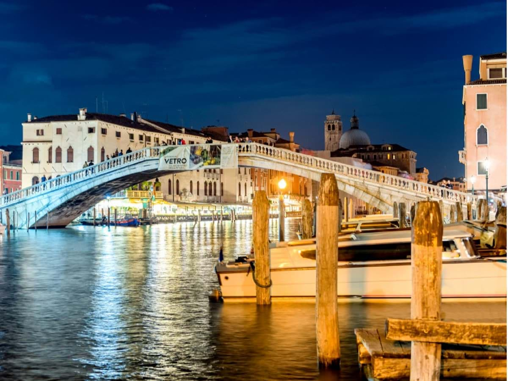
The Ponte degli Scalzi is a bridge in Venice. The bridge connects Santa Croce and Cannaregio. The bridge
is located in Ponte degli Scalzi, 30135 Venezia.
Burano
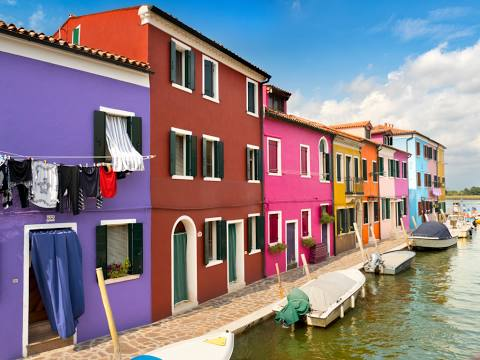
Burano is famously known for its brightly colored fishermen's houses. Its casual dining restaurants
serve seafood from the lagoon. The area is 21 hactors big and the area accomodates about 2 700 people.
Rialto Bridge
.jpg)
The Rialto Bridge is one of the oldest bridges in Venice. The bridge connects San Marco and San Polo.
Its first construction happened around 1173. The bridge is located in Sestiere San Polo, 30125 Venezia.
Palazzo Contarini del Bovolo

It is a small palace in Venice, famously known for its external multi-arch spiral staircase called Scala
Contarini del Bovolo. It is located in San Marco Campo Manin, 4303, 30124 Venezia.
Basilica di Santa Maria della Salute

Its a Roman Catholic church in Venice. It is located in Dorsoduro, 1, 30123 Venezia and was opened around
1687. The Festa Della Madonna Della Salute is hosted there.
Torcello
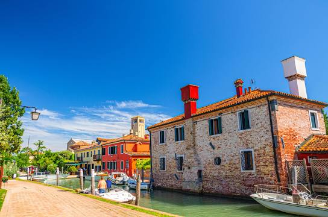
Torcello is an island in a North Lagoon Venice that has few residents. It often overflows with sightseers in summer.
It is believed that Torcello is where Venice began a lot of years ago.
Lido di Venezia

It is a barrier island in the Venetian Lagoon, northern Italy. It is home to about 20 000 people.
The Venice Film festival takes place there.
Carta Gate

This 15th-century gate was constructed as part of the Venetian Gothic Doge's Palace. It is located in
Saint Mark's Basilica.
FASHION
Scarf

It is broad silk band of cloth worn around the neck, or around the wrist.
Foulard
.jpg)
A foulard is a lightweight fabric made of silk or a mix of silk and cotton and its worn around the shoulders
or around the head.
TOMS Venice Collection Alpargata
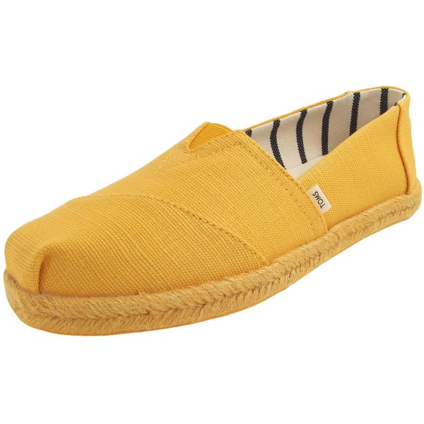
They are slip-on shoe has a relaxed elegance.
ACTIVITIES TO DO IN VENICE CITY
Fishing

Venice City is a island therefore the area is filled with water which enables people to fish both for selling,
and fun.
Boot Driving
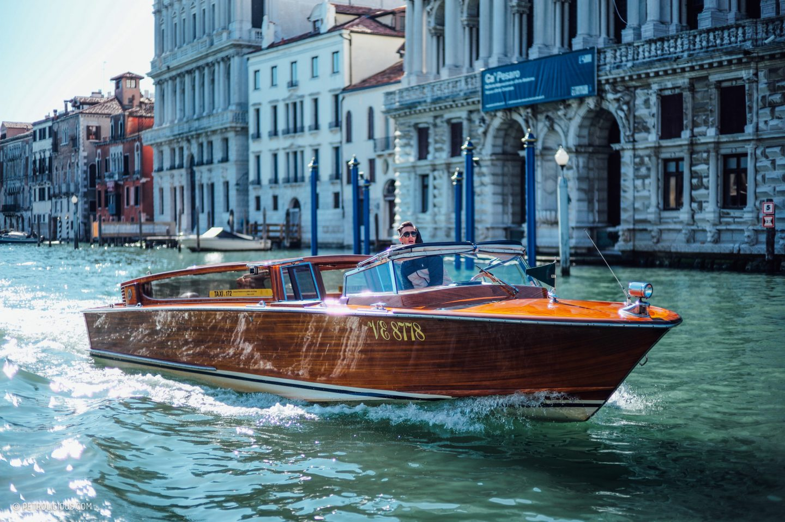
Water transport is the most popular mode of transport in the island of Venice City, therefore boot driving is
vital for the people of Venice City. People in Venice learn boot driving for employment reasons and for fun.
Swimming
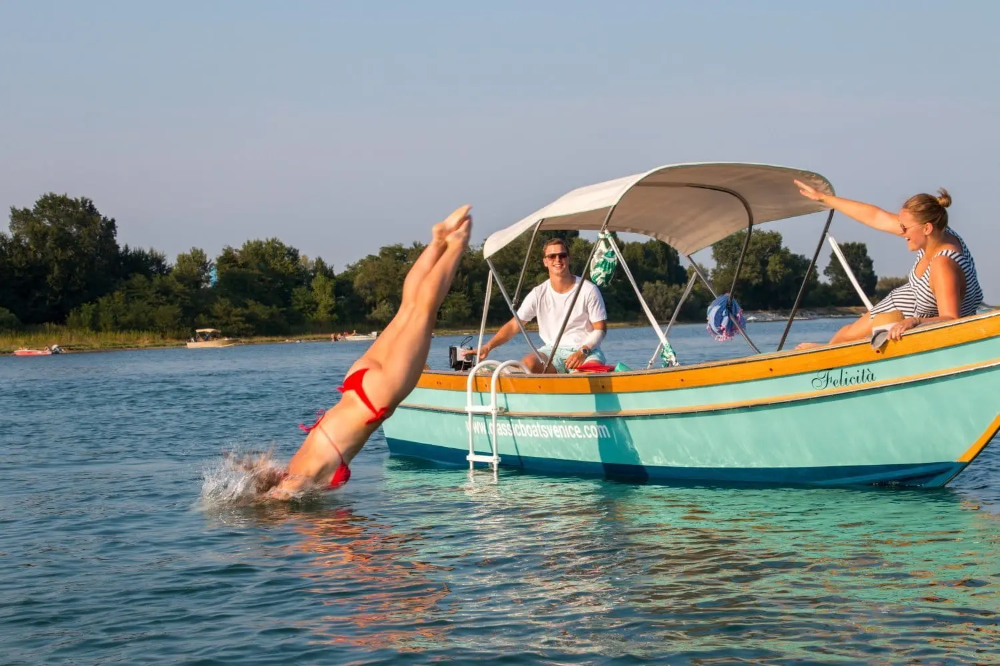
Venice City is filled with water therefore the people there swim at the beach and private pools. The
people there swim for fun and some swim for employment reasons.
FOOD AND DRINKS
Sarde In Saor
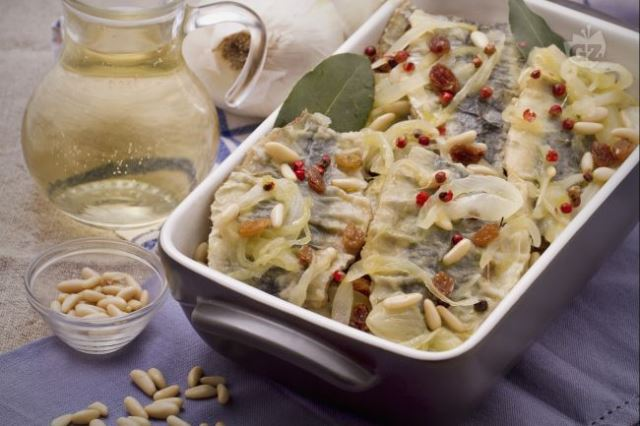
Sarde in saor is a Italian classic dish where sardines are deep fried and left to marinate in a
solution of onions and sweetened vinegar. When served it is sprinkled over with raisins and pine nuts.
Baccalaa Mantecato
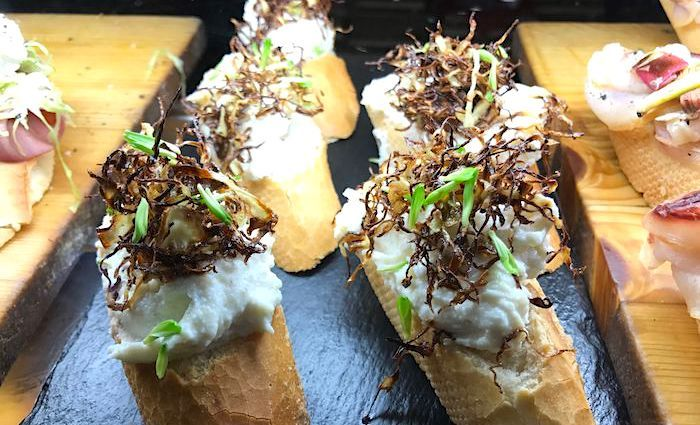
The soaked salt cod is mashed with extra virgin olive oil until it is smooth and wonderfully
fluffy. It is then served with either toasted polenta or grilled bread.
Risi e Bisi
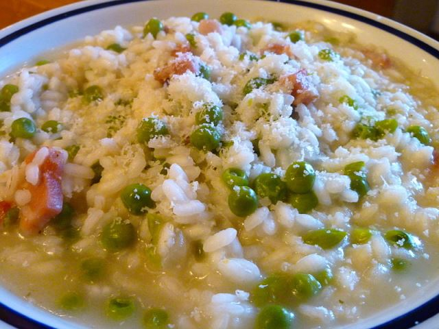
Risi e bisi means rice peas. Risi e bisi is a dish of cooked rice served with fresh new peas of spring
or frozen peas.
Bigoli In Salsa
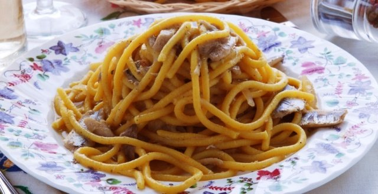
Bigoli in salsa is a signature dish of Venice made from pasta dish made from whole-wheat bigoli
pasta, salt-cured fish and onion or anchovy.
Mołéche
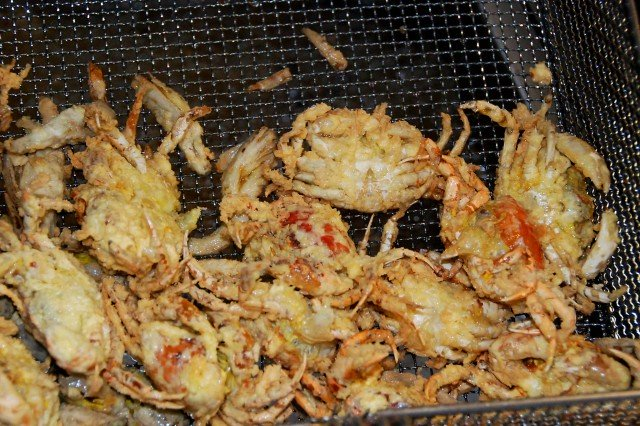
Mołéche is a dish from small green crabs only. The crabs can be served with salad and fried dishes.
Fritole
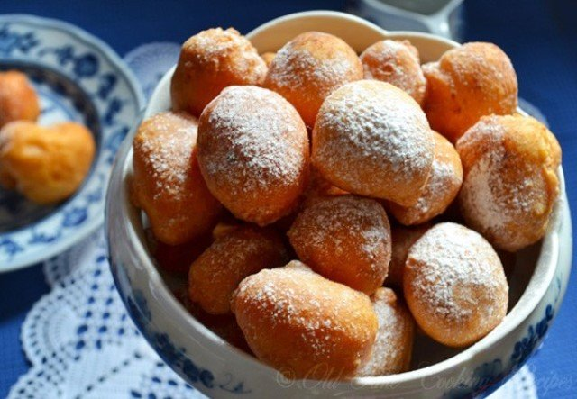
Fritole are round, yeast-risen fried pastries made with flour, eggs, milk, raisins and pine nuts.
Spritz Veneziano
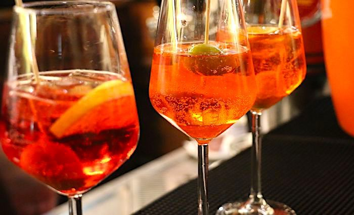
Spritz Veneziano is also called Aperol Spritz or just Spritz. It is an Italian wine-based cocktail
containing Aperol, Prosecco and soda water.
Bellini
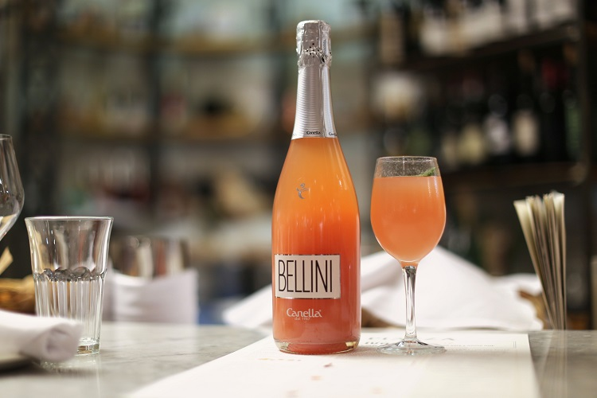
It is an Italian cocktail made from sparkling white wine and pureed white peaches.
Death In Venice
.jpg)
It is an alcoholic cocktail drink made of campari, grapefruit bitters and prosecco.